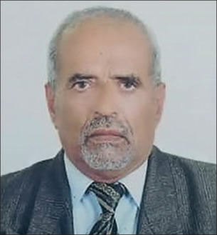

-

Epidemiologist and public health specialist . He was born on Sept 26, 1947, in a village in Yemen's Taiz governorate, and died on June 16, 2020, in Sana'a, Yemen, aged 72 years.
Yassin Abdel-Warith was involved in the response to major disease outbreaks across Yemen for nearly 50 years. It was no surprise, then, that WHO brought him in as a consultant to help when COVID-19 emerged in Yemen. Despite the ongoing conflict in the country, Abdel-Warith immediately got to work organising surveillance teams and setting up isolation centres.
Yassin Abdel-Warith
-
 Pulmonologist and former head of the Department of Medicine at the All India Institute of Medical Science. Born on June 14, 1941, in Shikohabad, India, he died on May 23, 2020, in New Delhi, India, aged 78 years.
Pulmonologist and former head of the Department of Medicine at the All India Institute of Medical Science. Born on June 14, 1941, in Shikohabad, India, he died on May 23, 2020, in New Delhi, India, aged 78 years.
Although he was a legendary pulmonologist, called upon to treat presidents and Bollywood stars, Jitendra Nath Pande made time for everyone. His office door was open to colleagues, students, and, especially, patients. “He gave a lot of time to patients”, said Abhishek Bhartia, the Director of the Sitaram Bhartia Institute of Science and Research in New Delhi, India, where Pande worked later in his career. “He was meticulous and he would never rush patients.” Instead, Pande used to frequently remind his students that patients were their best teachers.
Jitendra Nath Pande